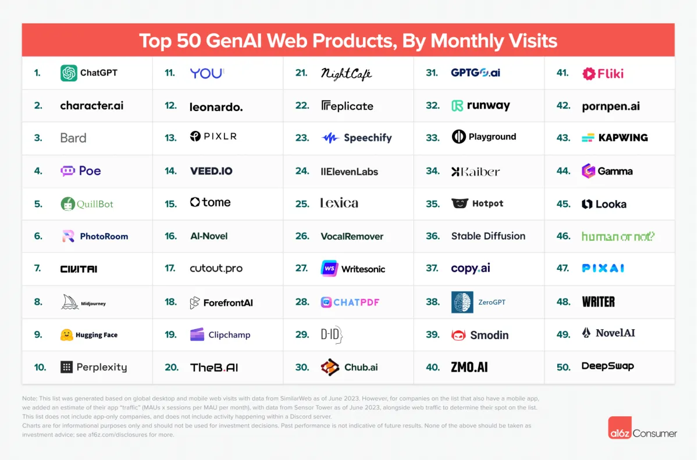

A Evolução dos Computadores, destacando as mudanças nas gerações de hardware, capacidade e propósito ao longo do tempo.

Na era dos primeiros computadores, marcados pela transição dos tubos a vácuo para os transistores, máquinas como o ENIAC, UNIVAC e IBM 1401 ocupavam salas inteiras, operavam com baixa velocidade e altíssimo custo, sendo programadas por cartões perfurados e utilizadas exclusivamente em contextos militares, científicos e governamentais, com foco em um processamento de dados centralizado e isolado (como ilustrado na imagem acima referente ao ano de 1960).
Com o avanço dos circuitos integrados e o surgimento dos microprocessadores, computadores como o Apple II, o IBM-PC e os primeiros PCs com Windows tornaram-se mais compactos e acessíveis, possibilitando seu uso em ambientes domésticos, educacionais e corporativos, marcando o início da conectividade com LANs, Internet e Web, além da popularização das interfaces gráficas e sistemas operacionais amigáveis — abrindo caminho para o acesso pessoal à computação e a entrada definitiva na era digital.

Na era da mobilidade e da inteligência artificial, tecnologias como nuvem, IoT e IA transformaram dispositivos como smartphones, notebooks, vestíveis e assistentes virtuais em ferramentas poderosas e sempre conectadas, com acesso constante via Wi-Fi e 4G/5G, computação em nuvem integrada e computadores “invisíveis” embutidos em objetos do dia a dia — consolidando um cenário de conectividade total, mobilidade e automação inteligente.
Para um melhor entendimento sobre IA, aqui está uma citação do site da BBC
A IA virou uma ferramenta fundamental para se enfrentar grandes desafios científicos. Áreas como saúde, astronomia e exploração espacial, neurociência ou mudanças climáticas, entre outras, vão se beneficiar ainda mais no futuro.